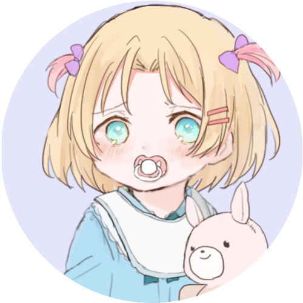

Members

yumin
（職員ID:HHSK-KB-YQL-001）
yuna
（職員ID:STSK-FSY-YQL-002）
Riku
（職員ID:HHSK-KR-YQL-003）
そらくん*Sorakun.
（職員ID:HHSK-SM-YQL-004）
Kanon
（職員ID:GJSK-KN-YQL-005）
MiyakojimaCam
（職員ID:GJSK-MC-YQL-007）
KiryuCamera
（職員ID:HHSK-KC-YQL-008）
ゆっくりねい
（職員ID:GJSK-ZN-YQL-012）
ゆらさん / Yurakun
（職員ID:HHSK-YR-YQL-014）
アッキー
（職員ID:HHSK-AI-YQL-017）
しなのまい
（職員ID:ZBSK-SA-YQL019）
ハム.Py
（職員ID:HHSK-HP-YQL-020）
しそむ
（職員ID:GJSK-SY-YQL-021）
とろろ
（職員ID:GJSK-TR-YQL-023）
神星 誠🍐（KamihoshiMakoto）
（職員ID:ZBSK-KM-YQL-024）
羽月莉音
（職員ID:ZBSK-HK-YQL-025）
Garrel
（職員ID:HHSK-GR-YQL-026）
yotuba
（職員ID:HHSK-YB-YQL-027）